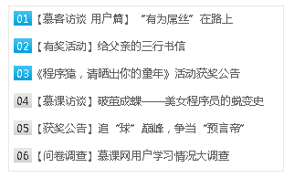

小伙伴们，根据所给素材制作如下图所示的TOP排行新闻列表。 图片素材:  图片引用，请使用此地址 http://img.mukewang.com/53cf0fa20001d3dc00200032.jpg任务
在右边代码编程器中9行处添加以下CSS样式: 一、定义topList类选择器，设置其宽为300px，高为180px， 边框线为1px实线 颜色为#E8E8E8，并让其在页面中水平居中。 二、去除项目列表项的项目符号，并设置整个列表ul四个方向填充均为5px。 三、设置em标签样式为宽20px，高16px，水平居中，不倾斜，颜色为#333， 并设置背景图片。 四、单独设置.top中的em标签的背景图片。 五、控制超链接的四种状态。